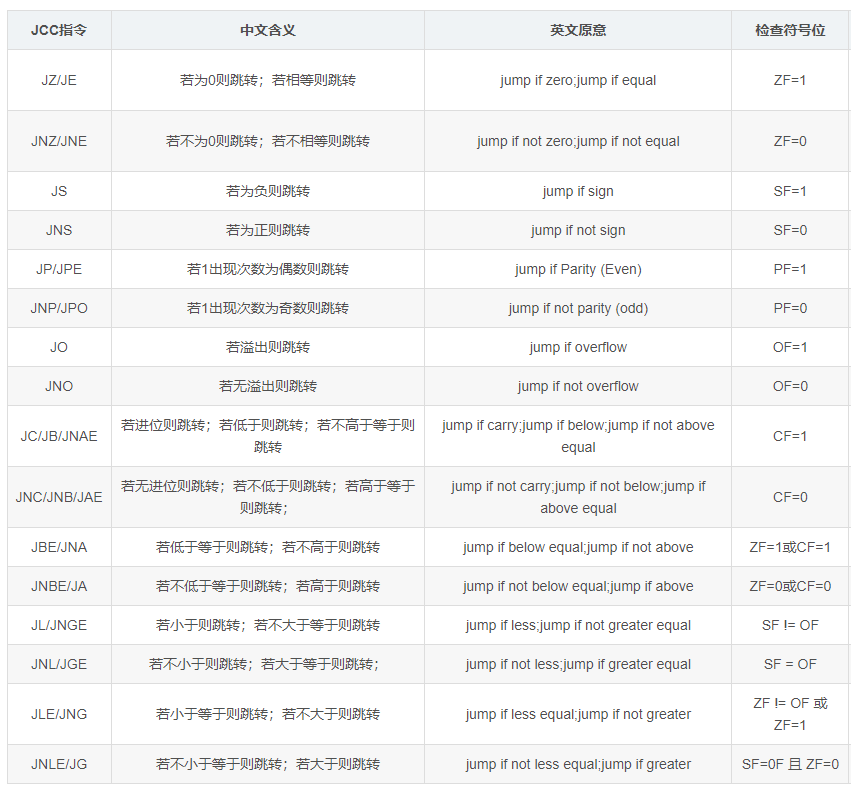
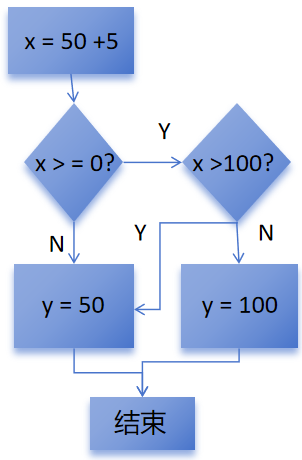
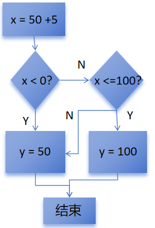

Rust逆向之条件判断
在Rust中所有条件判断必须使用布尔类型，也就是其他类型无法自动转换为布尔类型。对于if 1 这样的语句，Rust编译器会直接报错。在汇编层面，跳转指令如下图所示：

1.if-else条件判断
如下代码，是最常规的条件判断语句。
fn test_ifelse() {
let x = 100 + 5;
let mut b = 0;
if x > 100 {
b = x;
} else {
b = 100;
}
}对应反汇编如下，这里会判断x是否大于100
.text:0000000140001170 test_pro__test_ifelse proc near
.text:0000000140001170 sub rsp, 38h
.text:0000000140001174 mov eax, 100
.text:0000000140001179 add eax, 5
.text:000000014000117C mov [rsp+2Ch], eax
.text:0000000140001180 seto al
.text:0000000140001183 test al, 1
.text:0000000140001185 jnz short loc_14000119E ; 判断100+5是否整型溢出
.text:0000000140001187 mov eax, [rsp+2Ch]
.text:000000014000118B mov [rsp+34h], eax ; x = 100 + 5
.text:000000014000118F mov dword ptr [rsp+30h], 0 ; y=0
.text:0000000140001197 cmp eax, 100
.text:000000014000119A jg short loc_1400011C0 ; x > 100则跳转
.text:000000014000119C jmp short loc_1400011B6如果大于100，则将x赋值给y，然后退出函数：
.text:00000001400011C0 loc_1400011C0: ; CODE XREF: test_pro__test_ifelse+2A↑j
.text:00000001400011C0 mov eax, [rsp+2Ch] ; eax=x
.text:00000001400011C4 mov [rsp+30h], eax ; y=x
.text:00000001400011C8
.text:00000001400011C8 loc_1400011C8: ; CODE XREF: test_pro__test_ifelse+4E↑j
.text:00000001400011C8 add rsp, 38h
.text:00000001400011CC retn
.text:00000001400011CC test_pro__test_ifelse endp否则的话，会跳过输出整型溢出错误的逻辑，继续向下执行else块中的代码，然后退出函数：
.text:00000001400011B6 loc_1400011B6: ; CODE XREF: test_pro__test_ifelse+2C↑j
.text:00000001400011B6 mov dword ptr [rsp+30h], 100 ; y=100
.text:00000001400011BE jmp short loc_1400011C8这里可以看出Rust和C/C++的不同，C/C++会按代码的顺序翻译指令。也就是C/C++在遇到这样的逻辑的时候，会先判断x是否小于等于100。如果不是，则会继续向下执行if条件成立的代码，否则则会进行跳转，去运行else块中的代码。
对于如下if-else if - else结构的代码来说，生成的反汇编逻辑和上面是一样的，只是多了一个else-if的判断。
fn test_elseif() {
let x = 100 + 5;
let mut b = 0;
if x > 100 {
b = x;
} else if x < 100{
b = 10;
} else {
b = 100;
}
}首先，函数会判断是否大于100：
.text:00000001400011A0 test_pro__test_elseif proc near
.text:00000001400011A0 sub rsp, 38h
.text:00000001400011A4 mov eax, 100
.text:00000001400011A9 add eax, 5
.text:00000001400011AC mov [rsp+2Ch], eax ; x = 100 + 5
.text:00000001400011B0 seto al
.text:00000001400011B3 test al, 1
.text:00000001400011B5 jnz short loc_1400011CE ; 判断是否溢出
.text:00000001400011B7 mov eax, [rsp+2Ch] ; eax=x
.text:00000001400011BB mov [rsp+34h], eax ; 保存x的值
.text:00000001400011BF mov dword ptr [rsp+30h], 0 ; y=0
.text:00000001400011C7 cmp eax, 100
.text:00000001400011CA jg short loc_1400011F1 ; x大于100则跳转
.text:00000001400011CC jmp short loc_1400011E6是的话，则将x赋值给y，然后跳转到退出函数的地方:
.text:00000001400011F1 loc_1400011F1: ; CODE XREF: test_pro__test_elseif+2A↑j
.text:00000001400011F1 mov eax, [rsp+2Ch] ; eax=x
.text:00000001400011F5 mov [rsp+30h], eax ; y=x
.text:00000001400011F9 jmp short loc_14000120D不大于100，则继续判断x是否小于100：
.text:00000001400011E6 loc_1400011E6: ; CODE XREF: test_pro__test_elseif+2C↑j
.text:00000001400011E6 mov eax, [rsp+2Ch] ; eax=x
.text:00000001400011EA cmp eax, 100
.text:00000001400011ED jl short loc_140001205 ; 小于100则跳转
.text:00000001400011EF jmp short loc_1400011FB122B小于100，则将10赋值给y，随后退出函数:
.text:0000000140001205 loc_140001205: ; CODE XREF: test_pro__test_elseif+4D↑j
.text:0000000140001205 mov dword ptr [rsp+30h], 10 ; y=10
.text:000000014000120D
.text:000000014000120D loc_14000120D: ; CODE XREF: test_pro__test_elseif+59↑j
.text:000000014000120D ; test_pro__test_elseif+63↑j
.text:000000014000120D add rsp, 38h
.text:0000000140001211 retn
.text:0000000140001211 test_pro__test_elseif endp如果等于100，则将100赋值给y，然后退出函数：
.text:00000001400011FB loc_1400011FB: ; CODE XREF: test_pro__test_elseif+4F↑j
.text:00000001400011FB mov dword ptr [rsp+30h], 100 ; y=100
.text:0000000140001203 jmp short loc_14000120DRust中的if-else语句还有一种如下的用法，类似于C/C++中的三元运算符。经过逆向发现，生成的反汇编和前面if-else结构生成的反汇编是一样的，这里就不在放出来了。
fn test() {
let x = 100 + 5;
let b = if x > 100 { x } else { 100 };
}2.&&和||运算符
&&和||运算符经常在进行条件判断的时候出现，对于如下代码：
fn test1(){
let x = 50 + 5;
let mut y = 0;
if x >= 0 && x <= 100 {
y = 50;
} else {
y = 100;
}
}函数会首先判断x是否大于等于0:
.text:0000000140001170 test_pro__test1 proc near
.text:0000000140001170 sub rsp, 38h
.text:0000000140001174 mov eax, 50
.text:0000000140001179 add eax, 5
.text:000000014000117C mov [rsp+2Ch], eax ; x=50+5
.text:0000000140001180 seto al
.text:0000000140001183 test al, 1
.text:0000000140001185 jnz short loc_14000119E ; 判断整型溢出
.text:0000000140001187 mov eax, [rsp+2Ch] ; eax=x
.text:000000014000118B mov [rsp+34h], eax ; 保存x
.text:000000014000118F mov dword ptr [rsp+30h], 0 ; y=0
.text:0000000140001197 cmp eax, 0
.text:000000014000119A jge short loc_1400011C0 ; x>=0则跳转
.text:000000014000119C jmp short loc_1400011B6如果大于等于0则继续判断，是否大于100，如果不大于100，则将y赋值为50，然后退出函数：
.text:00000001400011C0 loc_1400011C0: ; CODE XREF: test_pro__test1+2A↑j
.text:00000001400011C0 mov eax, [rsp+2Ch]
.text:00000001400011C4 cmp eax, 100
.text:00000001400011C7 jg short loc_1400011B6 ; x>100则跳转
.text:00000001400011C9 mov dword ptr [rsp+30h], 50 ; y=50
.text:00000001400011D1
.text:00000001400011D1 loc_1400011D1: ; CODE XREF: test_pro__test1+4E↑j
.text:00000001400011D1 add rsp, 38h
.text:00000001400011D5 retn
.text:00000001400011D5 test_pro__test1 endp而如果在判断x>=0的情况下不跳转，则函数会跳过整型溢出检查的代码，来执行下面将y赋值为100的逻辑。或者在判断x>100的时候跳转了，也会将y赋值为100，然后跳转到退出函数的地址继续执行：
.text:00000001400011B6 loc_1400011B6: ; CODE XREF: test_pro__test1+2C↑j
.text:00000001400011B6 ; test_pro__test1+57↓j
.text:00000001400011B6 mov dword ptr [rsp+30h], 100 ; y=100
.text:00000001400011BE jmp short loc_1400011D11D1这里总结一下&&运算符在汇编层面的逻辑如下图：

对于||运算符，代码则如下：
fn test2() {
let x = 50 + 5;
let mut y = 0;
if x < 0 || x > 100 {
y = 100;
} else {
y = 50;
}
}首先，判断x是否小于0：
.text:00000001400011E0 test_pro__test2 proc near
.text:00000001400011E0 sub rsp, 38h
.text:00000001400011E4 mov eax, 50
.text:00000001400011E9 add eax, 5
.text:00000001400011EC mov [rsp+2Ch], eax ; x=50+5
.text:00000001400011F0 seto al
.text:00000001400011F3 test al, 1
.text:00000001400011F5 jnz short loc_14000120E ; 判断整型溢出
.text:00000001400011F7 mov eax, [rsp+2Ch] ; eax=x
.text:00000001400011FB mov [rsp+34h], eax ; 保存x
.text:00000001400011FF mov dword ptr [rsp+30h], 0 ; y=0
.text:0000000140001207 cmp eax, 0
.text:000000014000120A jl short loc_14000122F ; x<0则跳转
.text:000000014000120C jmp short loc_140001226如果小于0，则将y赋值为100，然后跳转到退出函数的地址：
.text:000000014000122F loc_14000122F: ; CODE XREF: test_pro__test2+2A↑j
.text:000000014000122F mov dword ptr [rsp+30h], 100 ; y=100
.text:0000000140001237 jmp short loc_140001241如果x>=0，继续判断x是否<=100，如果x大于100，就会继续向下执行上面将y赋值给100的代码：
.text:0000000140001226 loc_140001226: ; CODE XREF: test_pro__test2+2C↑j
.text:0000000140001226 mov eax, [rsp+2Ch] ; eax=x
.text:000000014000122A cmp eax, 100
.text:000000014000122D jle short loc_140001239 ; x<=100则跳转否则的话，就会执行y=50的代码，然后退出函数：
.text:0000000140001239 loc_140001239: ; CODE XREF: test_pro__test2+4D↑j
.text:0000000140001239 mov dword ptr [rsp+30h], 50 ; y=50
.text:0000000140001241
.text:0000000140001241 loc_140001241: ; CODE XREF: test_pro__test2+57↑j
.text:0000000140001241 add rsp, 38h
.text:0000000140001245 retn
.text:0000000140001245 test_pro__test2 endp所以此时的代码逻辑如下图：

3.match表达式
Rust中的match表达式，类似于C/C++中的switch-case。下面是一个最基础的用法，match中的_=>{}和c/c++的default关键字一样，用于处理均不匹配各项条件的默认情况。Rust编译器会要求，match表达式一定要匹配所有的情况，如果不能全写出来，就要用=>{}来处理默认情况。
fn test_match() {
let x = 1 + 1;
let mut y = 0;
match x {
1 => {
y = 1;
},
2 => {
y = 2;
},
3 => {
y = 3;
}
_ => {
y = 30;
}
}
}对应反汇编如下，首先判断是否等于1，
.text:0000000140001180 test_pro__test_match proc near
.text:0000000140001180 sub rsp, 38h
.text:0000000140001184 mov eax, 1
.text:0000000140001189 inc eax
.text:000000014000118B mov [rsp+2Ch], eax ; x=1+1
.text:000000014000118F seto al
.text:0000000140001192 test al, 1
.text:0000000140001194 jnz short loc_1400011C3 ; 判断整型溢出
.text:0000000140001196 mov eax, [rsp+2Ch] ; eax=x
.text:000000014000119A mov [rsp+34h], eax
.text:000000014000119E mov dword ptr [rsp+30h], 0 ; y=0
.text:00000001400011A6 sub eax, 1
.text:00000001400011A9 jz short loc_1400011E5 ; 为1则跳转如果x为1，则跳转执行y=1，然后在跳转退出函数：
.text:00000001400011E5 loc_1400011E5: ; CODE XREF: test_pro__test_match+29↑j
.text:00000001400011E5 mov dword ptr [rsp+30h], 1 ; y=1
.text:00000001400011ED jmp short loc_140001201如果x不等于1，继续向下判断x是否等于2：
.text:00000001400011AD loc_1400011AD: ; CODE XREF: test_pro__test_match+2B↑j
.text:00000001400011AD mov eax, [rsp+2Ch] ; eax=x
.text:00000001400011B1 sub eax, 2
.text:00000001400011B4 jz short loc_1400011EF ; x=2则跳转如果x等于2，则将y赋值为2，然后退出函数：
.text:00000001400011EF loc_1400011EF: ; CODE XREF: test_pro__test_match+34↑j
.text:00000001400011EF mov dword ptr [rsp+30h], 2 ; y=2
.text:00000001400011F7 jmp short loc_140001201x不等于2，就继续判断x是否等于3：
.text:00000001400011B8 loc_1400011B8: ; CODE XREF: test_pro__test_match+36↑j
.text:00000001400011B8 mov eax, [rsp+2Ch]
.text:00000001400011BC sub eax, 3
.text:00000001400011BF jz short loc_1400011F9 ; x=3则跳转
.text:00000001400011C1 jmp short loc_1400011DBx等于3，则将y赋值为3，然后退出函数：
.text:00000001400011F9 loc_1400011F9: ; CODE XREF: test_pro__test_match+3F↑j
.text:00000001400011F9 mov dword ptr [rsp+30h], 3 ; y=2
.text:0000000140001201
.text:0000000140001201 loc_140001201: ; CODE XREF: test_pro__test_match+63↑j
.text:0000000140001201 ; test_pro__test_match+6D↑j ...
.text:0000000140001201 add rsp, 38h
.text:0000000140001205 retn
.text:0000000140001205 test_pro__test_match endpx不等于3，则跳转到将y赋值为30：
.text:00000001400011DB loc_1400011DB: ; CODE XREF: test_pro__test_match+41↑j
.text:00000001400011DB mov dword ptr [rsp+30h], 30
.text:00000001400011E3 jmp short loc_140001201上面是match表达式需要匹配分支比较少的情况下，而如果是下面这种分支比较多的情况，代码逻辑就会不同：
fn test_match1() {
let x = 1 + 1;
let mut y = 0;
match x {
1 => {
y = 1;
},
2 => {
y = 2;
},
3 => {
y = 3;
},
4 => {
y = 4;
},
5 => {
y = 5;
},
6 => {
y = 6;
},
7 => {
y = 7;
},
8 => {
y = 8;
},
9 => {
y = 9;
},
10 => {
y = 10;
},
_ => {
y = 100;
}
}
}函数会首先将x-1和9相减，然后用ja这条指令来选择是否判断。如果x大于10，这里会跳转。如果x <= 0，根据那么x-1就变成负数，也就是首位变成1，还是大于9，依然会跳转。所以这里是当x不在1到9中的时候就会跳转：
.text:0000000140001210 test_pro__test_match1 proc near
.text:0000000140001210 sub rsp, 38h
.text:0000000140001214 mov eax, 1
.text:0000000140001219 inc eax
.text:000000014000121B mov [rsp+2Ch], eax ; x=1+1
.text:000000014000121F seto al
.text:0000000140001222 test al, 1
.text:0000000140001224 jnz short loc_140001259 ; 判断整型
.text:0000000140001226 mov eax, [rsp+2Ch] ; eax=x
.text:000000014000122A mov [rsp+34h], eax
.text:000000014000122E mov dword ptr [rsp+30h], 0 ; y=0
.text:0000000140001236 dec eax ; switch 10 cases
.text:0000000140001238 mov ecx, eax
.text:000000014000123A mov [rsp+20h], rcx ; 保存x-1的值
.text:000000014000123F sub eax, 9
.text:0000000140001242 ja short def_140001257 ; x-1>9，则跳转如果跳转了，就会执行=>{}中的代码，将y赋值为30，然后退出函数：
.text:0000000140001271 def_140001257: ; CODE XREF: test_pro__test_match1+32↑j
.text:0000000140001271 mov dword ptr [rsp+30h], 100 ; jumptable 0000000140001257 default case
.text:0000000140001279 jmp short loc_1400012DD如果没跳转，函数会将x-1作为下标，从jpt_140001257数组中取出值。然后该值和jpt_140001257数组的地址进行相加，作为要执行的目标地址进行jmp。
.text:0000000140001249 lea rcx, jpt_140001257 ; rcx等于jpt_140001257的地址
.text:0000000140001250 movsxd rax, dword ptr [rcx+rax*4] ; rax=jpt_140001257[x-1]
.text:0000000140001254 add rax, rcx ; rax加上jpt_140001257的地址
.text:0000000140001257 jmp raxjpt中保存的则是不同地址和jpt_140001257数组地址的偏移，后面减去的140019400h就是pt_140001257数组地址的地址。根据这个可以知道，其实上面的jmp rax就是根据x-9的值来跳转到下面的loc_14000127B,loc_140001285...这些地址。
.rdata:0000000140019400 jpt_140001257 dd offset loc_14000127B - 140019400h
.rdata:0000000140019400 ; DATA XREF: test_pro__test_match1+39↑o
.rdata:0000000140019404 dd offset loc_140001285 - 140019400h ; jump table for switch statement
.rdata:0000000140019408 dd offset loc_14000128F - 140019400h
.rdata:000000014001940C dd offset loc_140001299 - 140019400h
.rdata:0000000140019410 dd offset loc_1400012A3 - 140019400h
.rdata:0000000140019414 dd offset loc_1400012AD - 140019400h
.rdata:0000000140019418 dd offset loc_1400012B7 - 140019400h
.rdata:000000014001941C dd offset loc_1400012C1 - 140019400h
.rdata:0000000140019420 dd offset loc_1400012CB - 140019400h
.rdata:0000000140019424 dd offset loc_1400012D5 - 140019400h而上面说的那些地址中的代码，就是在match语句匹配到不同的情况下，对y赋予不同值然后退出函数：
.text:000000014000127B loc_14000127B: ; CODE XREF: test_pro__test_match1+47↑j
.text:000000014000127B ; DATA XREF: .rdata:jpt_140001257↓o
.text:000000014000127B mov dword ptr [rsp+30h], 1 ; jumptable 0000000140001257 case 1
.text:0000000140001283 jmp short loc_1400012DD
.text:0000000140001285 ; ---------------------------------------------------------------------------
.text:0000000140001285
.text:0000000140001285 loc_140001285: ; CODE XREF: test_pro__test_match1+47↑j
.text:0000000140001285 ; DATA XREF: .rdata:jpt_140001257↓o
.text:0000000140001285 mov dword ptr [rsp+30h], 2 ; jumptable 0000000140001257 case 2
.text:000000014000128D jmp short loc_1400012DD
.text:000000014000128F ; ---------------------------------------------------------------------------
.text:000000014000128F
.text:000000014000128F loc_14000128F: ; CODE XREF: test_pro__test_match1+47↑j
.text:000000014000128F ; DATA XREF: .rdata:jpt_140001257↓o
.text:000000014000128F mov dword ptr [rsp+30h], 3 ; jumptable 0000000140001257 case 3
.text:0000000140001297 jmp short loc_1400012DD
.text:0000000140001299 ; ---------------------------------------------------------------------------
.text:0000000140001299
.text:0000000140001299 loc_140001299: ; CODE XREF: test_pro__test_match1+47↑j
.text:0000000140001299 ; DATA XREF: .rdata:jpt_140001257↓o
.text:0000000140001299 mov dword ptr [rsp+30h], 4 ; jumptable 0000000140001257 case 4
.text:00000001400012A1 jmp short loc_1400012DD
.text:00000001400012A3 ; ---------------------------------------------------------------------------
.text:00000001400012A3
.text:00000001400012A3 loc_1400012A3: ; CODE XREF: test_pro__test_match1+47↑j
.text:00000001400012A3 ; DATA XREF: .rdata:jpt_140001257↓o
.text:00000001400012A3 mov dword ptr [rsp+30h], 5 ; jumptable 0000000140001257 case 5
.text:00000001400012AB jmp short loc_1400012DD
.text:00000001400012AD ; ---------------------------------------------------------------------------
.text:00000001400012AD
.text:00000001400012AD loc_1400012AD: ; CODE XREF: test_pro__test_match1+47↑j
.text:00000001400012AD ; DATA XREF: .rdata:jpt_140001257↓o
.text:00000001400012AD mov dword ptr [rsp+30h], 6 ; jumptable 0000000140001257 case 6
.text:00000001400012B5 jmp short loc_1400012DD
.text:00000001400012B7 ; ---------------------------------------------------------------------------
.text:00000001400012B7
.text:00000001400012B7 loc_1400012B7: ; CODE XREF: test_pro__test_match1+47↑j
.text:00000001400012B7 ; DATA XREF: .rdata:jpt_140001257↓o
.text:00000001400012B7 mov dword ptr [rsp+30h], 7 ; jumptable 0000000140001257 case 7
.text:00000001400012BF jmp short loc_1400012DD
.text:00000001400012C1 ; ---------------------------------------------------------------------------
.text:00000001400012C1
.text:00000001400012C1 loc_1400012C1: ; CODE XREF: test_pro__test_match1+47↑j
.text:00000001400012C1 ; DATA XREF: .rdata:jpt_140001257↓o
.text:00000001400012C1 mov dword ptr [rsp+30h], 8 ; jumptable 0000000140001257 case 8
.text:00000001400012C9 jmp short loc_1400012DD
.text:00000001400012CB ; ---------------------------------------------------------------------------
.text:00000001400012CB
.text:00000001400012CB loc_1400012CB: ; CODE XREF: test_pro__test_match1+47↑j
.text:00000001400012CB ; DATA XREF: .rdata:jpt_140001257↓o
.text:00000001400012CB mov dword ptr [rsp+30h], 9 ; jumptable 0000000140001257 case 9
.text:00000001400012D3 jmp short loc_1400012DD
.text:00000001400012D5 ; ---------------------------------------------------------------------------
.text:00000001400012D5
.text:00000001400012D5 loc_1400012D5: ; CODE XREF: test_pro__test_match1+47↑j
.text:00000001400012D5 ; DATA XREF: .rdata:jpt_140001257↓o
.text:00000001400012D5 mov dword ptr [rsp+30h], 10 ; jumptable 0000000140001257 case 10
.text:00000001400012DD
.text:00000001400012DD loc_1400012DD: ; CODE XREF: test_pro__test_match1+69↑j
.text:00000001400012DD ; test_pro__test_match1+73↑j ...
.text:00000001400012DD add rsp, 38h
.text:00000001400012E1 retn
.text:00000001400012E1 test_pro__test_match1 endp所以对于上面两种情况，match表达式和C/C++中的switch-case表达式逻辑是一样的。如果要匹配的情况比较少，就会在函数前面判断所有条件，如果符合条件就会跳转过去执行。如果要匹配的情况比较多，就会生成一个跳转表，然后根据偏移去计算要执行的代码地址，再跳过去直接执行，降低系统的开销。
Rust运行用|符号将不同的情况放到一起，比如下面的代码，如果x等于2，15或100都会将y赋值为1，否则为100。
fn test_match2() {
let x = 1 + 1;
let mut y = 0;
match x {
2 | 15 | 100 => {
y = 1;
},
_ => {
y = 100;
}
}
}对于的反汇编就会在一开始就判断x是否等于2，5，15这三个数中的任意一个，是的话就会跳转到loc_140001355中继续执行：
.text:00000001400012F0 test_pro__test_match2 proc near
.text:00000001400012F0 sub rsp, 38h
.text:00000001400012F4 mov eax, 1
.text:00000001400012F9 inc eax
.text:00000001400012FB mov [rsp+2Ch], eax ; x=1+1
.text:00000001400012FF seto al
.text:0000000140001302 test al, 1
.text:0000000140001304 jnz short loc_140001333 ; 判断整型溢出
.text:0000000140001306 mov eax, [rsp+2Ch] ; eax=x
.text:000000014000130A mov [rsp+34h], eax
.text:000000014000130E mov dword ptr [rsp+30h], 0 ; y=0
.text:0000000140001316 sub eax, 2
.text:0000000140001319 jz short loc_140001355 ; x=2则跳转
.text:000000014000131B jmp short $+2 ; eax=x
.text:000000014000131D ; ---------------------------------------------------------------------------
.text:000000014000131D
.text:000000014000131D loc_14000131D: ; CODE XREF: test_pro__test_match2+2B↑j
.text:000000014000131D mov eax, [rsp+2Ch] ; eax=x
.text:0000000140001321 sub eax, 0Fh
.text:0000000140001324 jz short loc_140001355 ; x=15则跳转
.text:0000000140001326 jmp short $+2
.text:0000000140001328 ; ---------------------------------------------------------------------------
.text:0000000140001328
.text:0000000140001328 loc_140001328: ; CODE XREF: test_pro__test_match2+36↑j
.text:0000000140001328 mov eax, [rsp+2Ch]
.text:000000014000132C sub eax, 100
.text:000000014000132F jz short loc_140001355 ; x等于100则跳转
.text:0000000140001331 jmp short loc_14000134Bloc_140001355就会将y赋值为1，然后退出函数：
.text:0000000140001355 loc_140001355: ; CODE XREF: test_pro__test_match2+29↑j
.text:0000000140001355 ; test_pro__test_match2+34↑j ...
.text:0000000140001355 mov dword ptr [rsp+30h], 1 ; y=1
.text:000000014000135D
.text:000000014000135D loc_14000135D: ; CODE XREF: test_pro__test_match2+63↑j
.text:000000014000135D add rsp, 38h
.text:0000000140001361 retn
.text:0000000140001361 test_pro__test_match2 endp如果和2，5，15都不想等，则会将y赋值为100，然后退出函数：
.text:000000014000134B loc_14000134B: ; CODE XREF: test_pro__test_match2+41↑j
.text:000000014000134B mov dword ptr [rsp+30h], 100 ; y=100
.text:0000000140001353 jmp short loc_14000135DRust允许match表达式有返回值，比如如下代码做的事情就和第一个例子一样。最后生成的反汇编也一样，这里就不放出来了。
fn test_match3() {
let x = 1 + 1;
let y = match x {
1 => {
1
},
2 => {
2
},
3 => {
3
},
_ => {
30
}
};
}Rust提供了if let语法来简化match表达式，比如下面代码，当x等于2的时候会为y赋值为2，否则不做任何事情：
fn test_match4() {
let x = 1 + 1;
let mut y = 0;
if let 2 = x {
y = 2;
}
}对应的反汇编也相对简单，判断x是否等于2：
.text:00000001400013F0 test_pro__test_match4 proc near
.text:00000001400013F0 sub rsp, 38h
.text:00000001400013F4 mov eax, 1
.text:00000001400013F9 inc eax
.text:00000001400013FB mov [rsp+2Ch], eax ; x=1+1
.text:00000001400013FF seto al
.text:0000000140001402 test al, 1
.text:0000000140001404 jnz short loc_14000141D ; 整型溢出判断
.text:0000000140001406 mov eax, [rsp+2Ch] ; eax=x
.text:000000014000140A mov [rsp+34h], eax
.text:000000014000140E mov dword ptr [rsp+30h], 0 ; y=0
.text:0000000140001416 cmp eax, 2
.text:0000000140001419 jz short loc_140001435 ; x=2则跳转
.text:000000014000141B jmp short loc_14000143D如果x等于2，就会将y赋值为2，然后退出函数。如果不等于2就会直接跳转到退出函数的代码，其实就是少了=>{}这一部分的代码逻辑。
.text:0000000140001435 loc_140001435: ; CODE XREF: test_pro__test_match4+29↑j
.text:0000000140001435 mov dword ptr [rsp+30h], 2 ; y=2
.text:000000014000143D
.text:000000014000143D loc_14000143D: ; CODE XREF: test_pro__test_match4+2B↑j
.text:000000014000143D add rsp, 38h
.text:0000000140001441 retn
.text:0000000140001441 test_pro__test_match4 endp